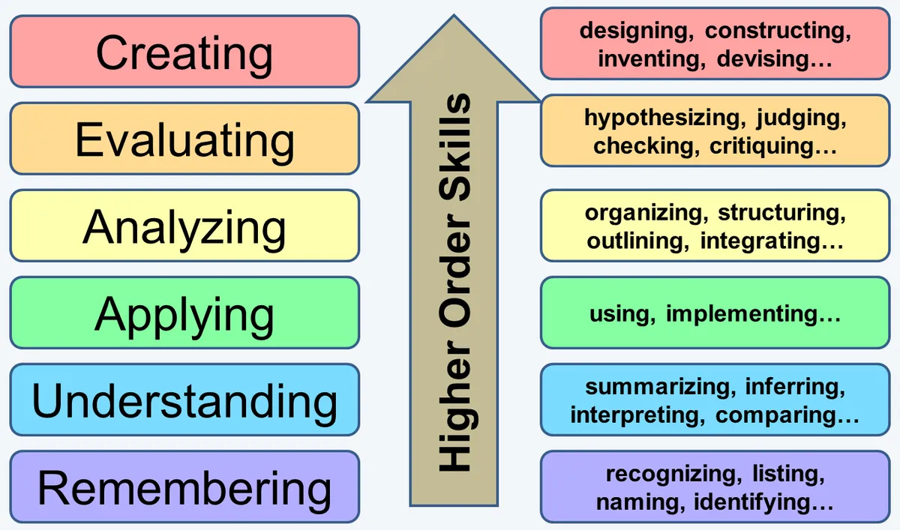

How to Learn
Introduction
“A man who asks is a fool for five minutes. A man who never asks is a fool for life.” - Chinese proverb
Learning is the primal matter of our world. Even for subjects that affect our body.
Before starting lifting weights, one is required to learn what exercises to do, what diet to choose, how to safely and efficiently do the exercises etc.
In order to learn any concept in this world and to be able to apply it successfully, one needs to learn how to learn.
By learning how to learn, you can go through the steps of learning much faster.
These steps can be seen below.
Bloom’s Taxonomy:
In order for us to skip the more fundamental, low-level steps like the first four, we need to start encoding, or focusing on the long-term memory for our studies.
In truth, we mostly rely on our short-term memory to learn or study, but that’s not sustainable.
You will forget some or all of the stuff you learnt, unless you’re not using it everyday or integral to your survival.
To improve our long-term memory, we need to skip to the higher order of skills when trying to learn something. Most people settle for remembering, but as I said, your short-term memory is just that, short. You will not remember if you do not repeat it every day or every week at least.
Let’s say you skip straight to evaluating, where you pit two or more ideas against each other, judge them and make new hypotheses.
You will let your brain automatically deal with the lower level stuff, like remembering and understanding. To do that, you need to strengthen your cognitive load: the power to keep multiple ideas in your mind at once and using them all later, in tandem.
For example, instead of writing down each sentence as it’s spoken or written by your teacher, try going five minutes without jotting down notes as soon as some information is being unveiled, then start writing about the ideas that your teacher spoke about those last five minutes. Try to see if you remember anything and, more importantly, try to see if you can birth some connections between the ideas.
Try and do it all in your mind for a while before lessening your cognitive load.
Learning Techniques
- Instead of learning for the sake of learning, learn in order for you to do something. For example, if you want to learn how to code, you should start learning in order for you to build an app (or whatever else you want to do). All of your learning should fuel this goal. After you’re done with the project, you should be able to ascertain whether you want to continue learning that subject, which, yet again, should be fixed toward a tangible project.
- Priming: you read a summary of what you’re about to learn before you learn it, or just skim over the paper or chapter. This will allow you to have more of those lightbulb moments as you link each small idea to the bigger picture.
- Asking the right questions: ask why or how instead of what, for each idea.
- Revision: revise the knowledge within 24 hours of it being learnt.
- Different forms of learning: don’t just learn using words, use pictures, audio or practical stuff.
- Use a mind map. The ideas within should be interconnected and more image-based than word-based.
- Start with higher-level concepts first. Read something that is harder for you to grasp and put the ideas that you don’t understand on a paper so you can revisit them later.
- Focus on learning multiple skills, but only focus on mastering one at a time.
- Share what you’ve learned online.
Resources
Resources for learning something new everyday:
Other resources: